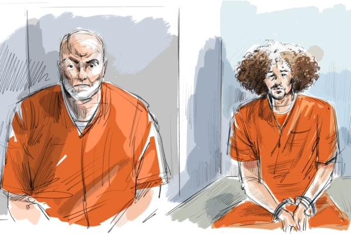

62 岁的弗阿德·莫斯塔法·埃尔迪迪（左）与他的儿子穆斯塔法·埃尔迪迪 一起出现在法庭素描中，他们出现在安省新市举行的听证会上。（Alexandra Newbould/加通社） 【2024年08月07日讯】（记者王兰多伦多报导）联邦保守党周二（8月6日）表示，加拿大骑警最近挫败一对父子涉嫌在多伦多发动恐怖袭击的阴谋，这对父子如何通过移民和安全审查程序进入加国，加拿大人需要一个答案。据CTV报导，保守党众议院领袖熙尔（Andrew Scheer ）表示，加拿大人“有权知道出了什么问题”，他呼吁魁人政团和新民主党支持该党推动众议院公共安全委员会，就这一“令人不安和震惊”的情况举行紧急听证会。
谢尔周二在渥太华表示：“这是特鲁多国家安全系统的巨大失败。”他质疑“与恐怖组织有联系”的人如何能够进入加拿大并获得公民身份。
7 月28日，加拿大骑警在安省列治文山逮捕了 62 岁的弗艾德·埃尔迪迪（ Fouad Mostafa Eldidi ）和 26 岁的穆斯塔法·埃尔迪迪（ Mostafa Eldidi）。警方称这对父子是加拿大公民，他们“正处于计划在多伦多发动严重暴力袭击的后期阶段”。
两人面临一系列与恐怖主义相关的指控，包括为伊斯兰国的效力、在伊斯兰国的指示下或与伊斯兰国有关的阴谋下实施谋杀。
虽然大部分指控是因为两人在加国进行的活动，但父亲也被指控2015 年 6 月在加拿大境外为恐怖组织实施严重攻击。
Global News上周援引未透露姓名的消息来源报导称，这名父亲被拍到参与海外伊斯兰国暴力活动后移民到加拿大，而当时他的儿子没有加拿大公民身份。 CTV News 尚未独立核实该报道。
谢尔表示，他没有看过这段视频，但他表示，埃尔迪迪此前与伊斯兰国有联系，但他仍能获得加拿大公民身份，这是令人无法接受的。
父子上周短暂出庭，否认指控，但没有提出抗辩。他们预计将于周三回到法庭。
“为了让加拿大人对我们的移民系统有信心，我们需要知道，在每种情况下，在每一次申请中，都有进行尽职调查和适当的筛选，但这对父子身上没有发生。”谢尔说， “有人差点因此丧生。”
保守党认为，尽管警方正在进行刑事调查，但联邦机构应该披露这些人如何进入加拿大的详细信息、是否还有其他人与恐怖组织有联系以及正在采取的行动是“完全适当的”以免类似情况再次发生。
保守党还直接写信给公共安全部长多米尼克·勒布朗（Dominic LeBlanc），要求公布有关警方挫败两人实施恐怖主义阴谋的更多细节。
熙尔表示，他们希望看到勒布朗作为第一个证人出庭作证，其次是国家安全官员和负责审查公民身份申请的人员。
责任编辑：严枫